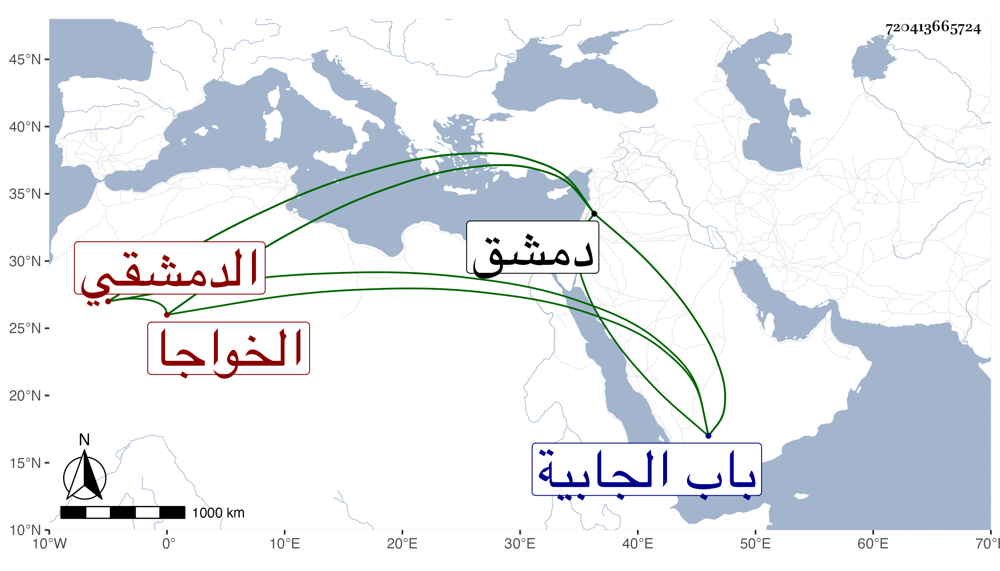

0902Sakhawi.DawLamic.ITO20230111-ara1.EIS1600.720413665724
Biography ID: 720413665724
339
أحمد بن محمد بن سليمان بن أبي بكر الخواجا شهاب الدين الدمشقي والد العلاء علي الآتي ويعرف بابن الصابوني . باشر قضاء دمشق حين تولاه والده ونظر جيشه وبنى جامعا خارج باب الجابية وكان خيرا . مات في ليلة ثامن عشري المحرم سنة ثلاث وسبعين بقلعة دمشق وكان معتقلا بها ثلاثة أشهر وصلى عليه من الغد بجامع دمشق ودفن بجامعه عفا الله عنه وإيانا .
